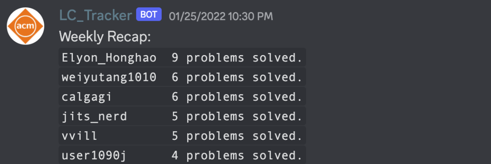
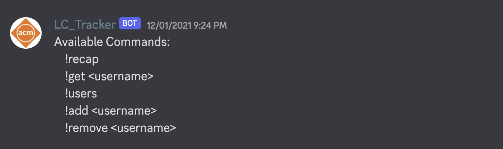
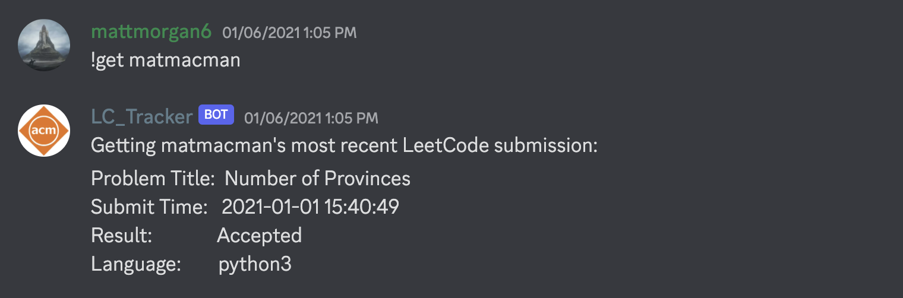

A snippet of the weekly leaderboard.
The idea for this project came to me shortly after my election to president of the ACM club at Oregon State University. As a student chapter of the greater ACM organization, our group specifically focuses on competitive programming and technical interview prep. I wanted a way to motivate the members to practice solving problems in their free time to prepare for upcoming competitions as well as software engineering interviews at big-name companies. Since our club uses a Discord server for communication, I figured it was the perfect opportunity to learn to write a bot.
Create a discord bot that automatically fetches a leaderboard of how many problems each club member solved in the last week!
1. Getting the data
The first thing to tackle was determining a way to get specific user data from leetcode.com. The nice thing is that problem submissions are public across all accounts. I popped open a browser and inspected the network requests and found a graphql query getRecentSubmissionList, which will get a list of submissions for a specific user.
2. Coding up the Discord bot
I decided to go with Python3 and the discord.py library. My vision for the bot was two-fold. First, once a week, the bot would autonomously post a leaderboard of how many problems a person solved. Secondly, users could run a command such as !get user1 and the bot would print the most recent problem that user1 has solved. This came in handy during ACM meetings when people wanted to see what their friends were recently working on and what language they used.

A list of available commands for the LeetCode bot.

Getting the most recent submission for a user.
3. Parallelization
Because each request would only fetch problem submissions for a specific user, it would take minutes to get the data sequentially for a weekly leaderboard. Instead, I used the grequests library to make asynchronous requests in parallel which reduced the time to fetch data by 100x.
4. Unit tests
Adding unit tests was important for the reliability of the project as well as a good skill to practice. The pytest library was especially nice for mocking GET requests and file reads.
This was a big project for me because it was the first outside of the workplace that I had developed for real users. I found a problem to solve, devised a solution, learned the necessary skills, and maintained the project for multiple years.
In the end, the bot boosted the motivation of club members to practice problem-solving. OSU ACM swept Oregon Division 1 and Division 2 of the International Collegiate Programming Contest in 2020. Moreover, in the following year, a record 9 teams from OSU competed at ICPC NW!
You can find the entire codebase in the github repo linked here.